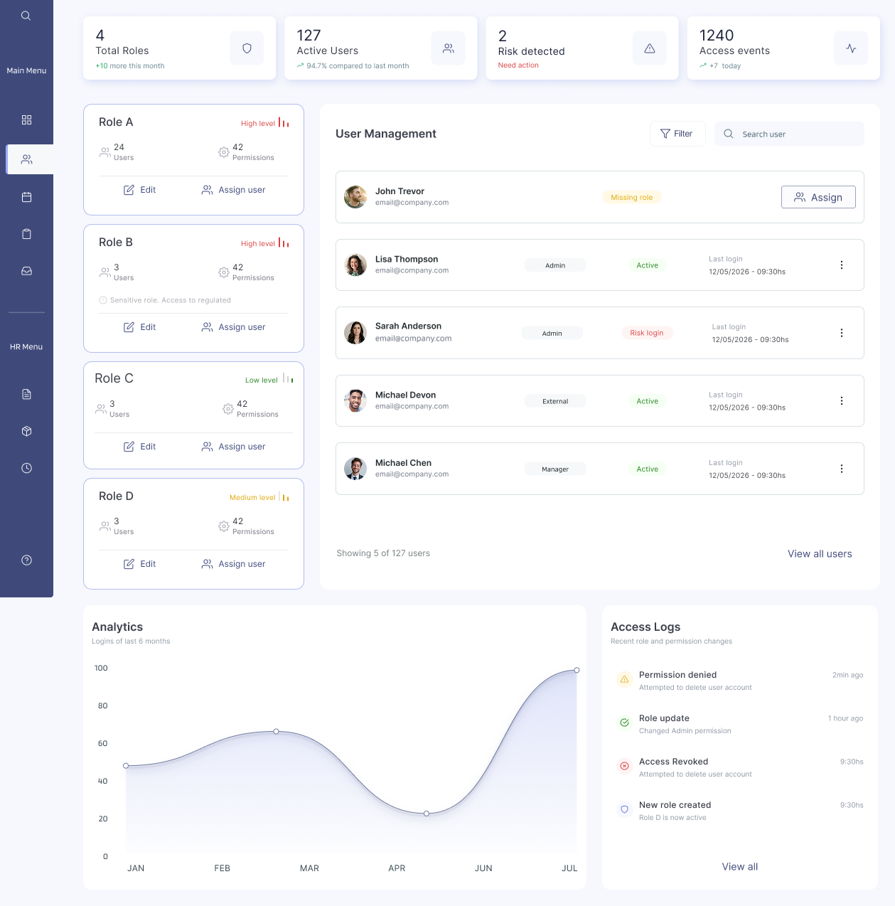
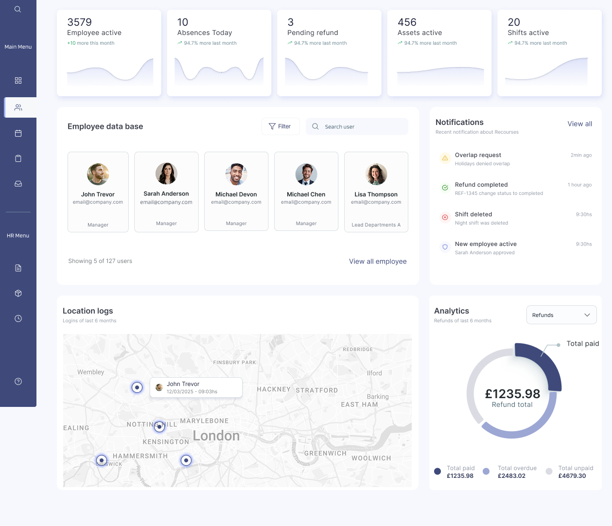
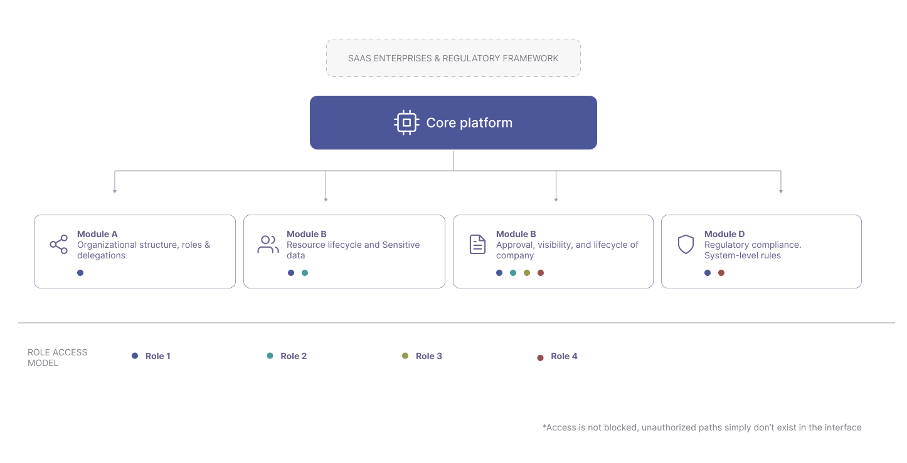
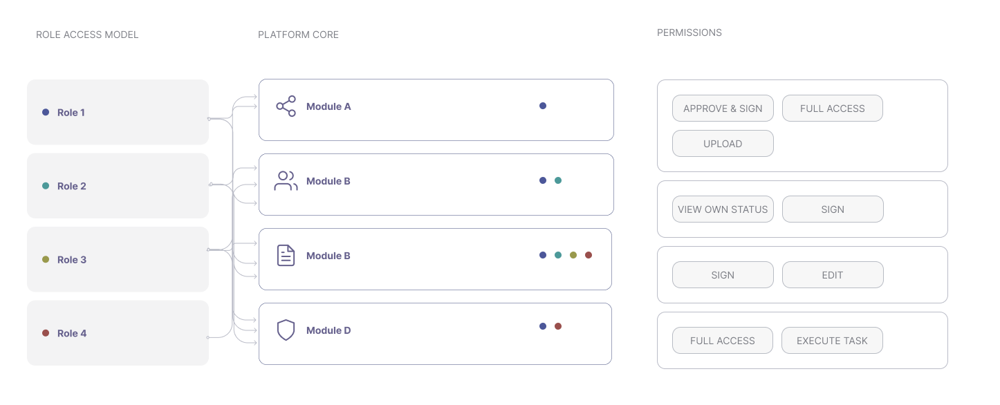
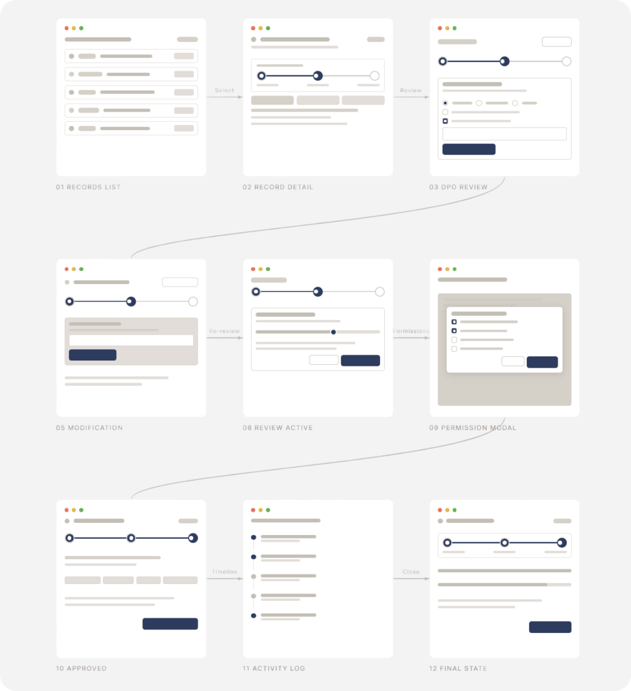

Enterprise Compliance & Business Management Platform
Designing a compliance-first SaaS that transforms dense legal complexity into intuitive workflows non-technical users can navigate confidently.
Role
Lead Product Designer / UX Architect
Scope
End-to-end product design
Team
Stakeholders + Engineering
Year
2025–2026

Visual designs and proprietary workflows are omitted under NDA. This case study documents the full design thinking, system architecture and compliance-driven UX approach.
10
Specialised modules across regulatory domains
0
Non-compliant user paths — built out of the UX structure
850+
Excel rows replaced by guided digital workflows
Overview
A SaaS platform for organisational management and regulatory compliance — covering GDPR, occupational health and cross-departmental processes. The product required granular access control, strict data separation between organisations, and auditability designed into every user action.
I led the project end-to-end: from translating legal requirements into product structure, to defining the IA, designing all 10 modules, and working directly with stakeholders and engineering to ship it.
The challenge
"How do you translate 850 rows of Excel and dense legal documents — written for lawyers — into a system that non-technical users can follow without ever making a compliance error?"
Before — the problems
850+ Excel rows tracking certifications manually
Legal documents written for lawyers, not end users
Manual email reminders for every deadline
No visibility into who approved or signed what
Undocumented, error-prone audit processes
After — the vision
Guided workflows enforce compliance automatically
Legal requirements translated into step-by-step UI
System-triggered notifications based on real-time status
Audit trail integrated into every action
Role-based access scoped per organisation type

Platform dashboard — organisational overview with compliance status
Design approach
Strategy 01
Legal requirements as UX constraints
Analysed regulatory frameworks to extract mandatory processes — then designed the UX to enforce them invisibly, not through warnings or error messages.
Strategy 02
Information architecture as a safety layer
Structured navigation to make unauthorised actions structurally impossible — not blocked by alerts, but simply absent from the interface.
Strategy 03
Role-based mental models
Roles as configurable containers, not fixed profiles — transforming complex permission matrices into something admins could manage with confidence.
Strategy 04
Guided workflows by default
Users couldn't take non-compliant paths — not because the interface blocked them, but because those paths simply didn't exist.
Key decisions
🏗️
System-first architecture
10 interconnected modules sharing unified logic with strict data separation — designed as a coherent system, not a collection of screens. Every module shares state, permissions and audit logic.

🔐
Role-based access as configurable containers
Instead of fixed permission profiles, roles were designed as flexible containers. Non-technical admins could manage who sees what without needing to understand the underlying data model.

⚙️
Automated compliance workflows
Document assignment, review, approval and signature were structured through predefined flows that enforce the correct actor involvement — removing the possibility of skipping a required step.

👤
Designing for non-technical users: The UX had to provide clear mental models and guide high-stakes actions without ambiguity — embedding compliance into the product itself, not bolted on as a warning layer.
Key learnings
📖
Translating legal complexity: Reading GDPR and occupational health law — then extracting what needs to be enforced through design, not documentation. The skill is knowing what to make invisible.
🔗
Systems over screens: The real challenge was architecting how 10 modules share data, enforce permissions and maintain audit trails across complex multi-actor journeys — not designing individual screens.
🤝
Stakeholder translation: Bridging legal experts, operations managers and engineers — using design as the common language that made abstract requirements concrete and shippable.
Have a complex product challenge?
I specialise in turning regulatory and operational complexity into products people can actually use.